From Imagetext to Worldtext: Generative AI as Operative Ekphrasis
By Watson Hartsoe & Jay David Bolter
Abstract
Generative AI platforms use prompts to create images, videos, and interactive media. The act of prompting can be understood as a new form of ekphrasis — the ancient literary practice of vivid description. The crucial difference is that unlike traditional ekphrastic poetry and prose, the ekphrasis of prompting is, as Hannes Bajohr has argued, "operative": the text not only describes an image but generates it, collapsing the traditional distinction between the verbal and the visual. Prompt and image together constitute an imagetext, which W. J. T. Mitchell and others have suggested has always been an imagined goal of ekphrasis. Yet this paper argues that the imagetext is already being exceeded. As generative systems move from still images toward video, simulation, and interactive environments, the critical problem shifts from whether language can produce images to whether language can help constitute worlds. This paper proposes **worldtext** as a threshold concept for this transition. The argument develops through three linked ideas: operative ekphrasis, thick prompting, and worldtext. It then turns to Homer's Shield of Achilles as a pre-computational model of world-bearing description — not merely a famous ekphrastic object, but a compressed world-system whose structure anticipates the architecture of contemporary world models.
1. The Operative Turn and the Obsolescence of the Imagetext
The old ekphrastic question asked whether words could make readers see. Generative AI appears to answer yes: the word becomes the picture. However, that answer is already obsolete. The decisive shift is not from word to image but from word to world model. Prompting is becoming a cumulative, procedural, and increasingly spatial practice in which description no longer points at a world from outside. Description helps constitute the world's operating conditions.
To grasp this shift, we must first dismantle a specific critical history. For the better part of the twentieth century, the dominant theoretical framework for ekphrasis was governed by a profound and deliberate narrowing of the concept. As established by Leo Spitzer's influential 1955 analysis of John Keats's "Ode on a Grecian Urn," ekphrasis was strictly redefined as the "poetic description of a pictorial or sculptural work of art." This formalist constraint, later codified by James A. W. Heffernan as the "verbal representation of visual representation," effectively concealed the original operativity of the ancient rhetorical practice. By restricting ekphrasis to the verbal representation of a static visual artifact, twentieth-century literary criticism forced the concept into a rigid medial boundary, emphasizing the friction, intermedial tension, and ultimate impossibility of perfectly translating visuality into text. This era produced rich analyses of literary pictorialism and spatial form, yet it fundamentally obscured the productive, world-building capacity of the word.
However, as classical scholars and rhetoricians have demonstrated, the ancient Greek definition of ekphrasis, rooted in the *progymnasmata* — the foundational rhetorical exercises of antiquity — did not require a work of art as its subject. As Ruth Webb (1999) has shown, ancient ekphrasis was defined not by its object but by its function: *enargeia*, or vividness, and its operative capacity to bring a subject — whether a battle, a person, or a place — before the eyes of the audience. It was a technology of production, not merely of representation. The digital age catalyzed a gradual return to this performative understanding long before the arrival of modern large language models. As Renate Brosch argues, digital ekphrasis operates as a "performative strategy" that transforms language into something dynamically experienced and inhabitable. In the context of multimodal AI, the description of a visual object is no longer a rhetorical illusion but a literal, computational execution.
Three terms organize this paper's argument. *Operative ekphrasis*, following Bajohr (2024), names the first threshold: the moment when textual description became computationally executable, collapsing what had been a semiotic gap between word and image into a single generative operation. In the multidimensional latent space of a diffusion model, words and images are mapped into the same mathematical vectors. *Thick prompting*, drawing on Clifford Geertz's (1973) concept of thick description, names the practice through which users negotiate the layered cultural codes already embedded in generative models. *Worldtext* names the threshold now emerging: the point at which operative ekphrasis extends beyond the generated image and toward the generated world — an environment that persists in time, responds to interaction, and is governed by constraints that function less like captions and more like constitutions.
The Shield of Achilles is the hinge between these concepts. The shield is not the first great ekphrasis. It is a miniature world model. Homer's description does not only render an object; it organizes a cosmos of war, labor, law, agriculture, dance, weather, sea, and divine making. The shield is therefore the bridge between operative ekphrasis and worldtext: a described artifact that already behaves like a world-bearing system.
Worldtext is not a rival term for world model. Worldtext names the moment when description becomes an interface to a world model. That distinction matters because it keeps the humanistic question alive inside the technical one: not simply *how* does the model generate a world, but *what kind of world* does the description authorize?
2. Prompting as Performance and Thick Description
Prompting is a process, even when it begins with a single exchange of word and image. A user writes a prompt; the system returns an image. But the simplicity of this exchange is deceptive, because users seldom stop there. They revise the prompt, regenerate the image, change the medium, add a reference image, alter a style, or ask the model to explain how the prompt should be rewritten. The operative unit is therefore not the single prompt. The operative unit is the loop. Oppenlaender (2022–2024) documents this loop as a co-creative ecosystem of iterative experimentation. PromptMagician (Lin et al., 2024) formalizes the diagnostic cycle: users inspect returned images, identify where the model defaulted, and compose the next prompt against what they learned.
This performative character links operative ekphrasis to the older rhetorical tradition of the *progymnasmata*. In that tradition, ekphrasis was not primarily a finished literary object. It was an exercise in vividness, delivery, and rhetorical force — meant to be performed before an audience and judged by its capacity to make something absent appear. As Quintilian insisted (*Inst. Or.* 6.2), generation must begin first in the orator's imagination. Twentieth-century literary criticism, by contrast, often treated ekphrasis through the finished poem: the "well-wrought urn," to use Cleanth Brooks's famous phrase, becomes an emblem of completed verbal art. Operative ekphrasis shifts the emphasis back toward process. The prompt is not a finished urn. It is an instruction, a performance score, a speculative command.
Understanding the constraints of this environment fundamentally changes how one must approach prompting. A prompt does not enter an empty machine. It enters a system already thick with captions, images, styles, genres, metadata, interface defaults, safety constraints, platform habits, and cultural residues. As Roland Meyer has argued in his analysis of "platform realism," the operative space of generative models is composed of invisible flows of contextual data and the blind statistical processing of billions of pre-existing image-text pairs. The visible world enters the latent space not as a direct simulation but as a faint, mathematically distorted echo mediated by massive, structurally biased training datasets. The aesthetics produced by these systems are governed by a paradigm that privileges the "sayable" over the "visible": visual output is entirely dependent on what can be formulated in text. Recent research into the alignment of large language models has demonstrated that relying on superficial demographic proxies fails to capture the deeply nuanced nature of human cultures; AI systems must produce "thick outputs" that reflect deeper cultural meanings grounded in user-provided context and intent (Orlowski et al., 2025).
We suggest the term *thick prompting* for this increasingly layered practice. The term deliberately echoes Clifford Geertz's "thick description" (1973), but the point is not to import anthropology wholesale into prompt engineering. Geertz is useful here because he treats description as an engagement with layered codes rather than as a neutral recording of surface behavior. A wink, a twitch, and a parody of a wink may look similar, but they belong to different symbolic orders. Description becomes thick when it tries to account for those orders. Prompting becomes thick for a related reason: a prompt probes a model's accumulated semantic, visual, stylistic, and cultural associations. The user writes into a system already saturated with prior images, texts, genres, clichés, historical styles, and platform conventions. The prompt must therefore negotiate with layers of latent coding.
The difference between thin and thick prompting is not length but situated pressure.
A thin prompt says: "Make Achilles' shield."
A thick prompt says: "Make the shield as a worked bronze world being fabricated scene by scene, not as a fantasy emblem. Let the surface hold sky, city, field, law, dance, harvest, war, and Ocean as an ordered cosmos. Avoid heroic poster composition. Treat the shield as a world-bearing artifact whose scenes imply motion, institutions, labor, ritual, and fate."
The thin prompt treats the model as a vending machine. It names a subject and trusts the system's defaults. But the defaults are never neutral. The model fills silence with what it has learned to expect: generic gloss, familiar compositions, inherited clichés, dominant visual styles, and platform-friendly compromises. Simonen et al. (2025) demonstrate this empirically: when prompts fail to grip the system, default images recur across unrelated inputs. The archive always goes first. The thick prompt gives the system enough organized constraint to move the result away from generic visual habit and toward a specific world of relations. It tells the model what to preserve, what to resist, what to foreground, and what to suppress. It does not trust the default. It prunes the default.
As prompting has developed into a community of practice, this score has become increasingly elaborate. Skilled practitioners rarely rely on a single phrase. They prompt iteratively, test variants, use images to generate images, combine verbal and visual constraints, and compose prompts as structured files, scripts, or code. Even before generative AI, digital media theorists were arguing for the multimodality or intermediality of digital ekphrasis (Brosch, 2018) as well as for ekphrasis as performance. Metaprompting — the writing of prompts that generate or revise other prompts — makes explicit what is already implicit in much generative practice: the prompt is no longer simply a sentence addressed to a machine (Zhang, Yuan, and Yao, 2025). It is a procedural apparatus for producing further acts of description.
This is why there is no final perfect prompt. Generative models are probabilistic rather than symbolic rule books. Prompting them is therefore approximate, iterative, and open-ended. The prompter does not retrieve a known object from a database. The prompter performs a series of operations on a field of possibility. Each output reveals another mismatch between user intention and model tendency. Each revision becomes another test of the relation between description and production.
The crucial point is not that prompting is "creative" or "participatory" — that claim is too weak. The crucial point is that prompting shifts ekphrasis away from the finished artifact and toward the conditions of generation. A prompt does not evoke an image. It probes a model. It discovers a platform's defaults. It exposes the distance between what the user says and what the system can operationalize. In thick prompting, description becomes a way of steering generation. The image is not the product. The image is feedback. Thick prompting names this unfinished condition: ekphrasis after the image has become feedback.
3. The Shield of Achilles as Worldtext
The Shield of Achilles should not enter this argument as a famous example. It should enter as the model.
As classical scholars have remarked, the shield occupies a position both within and beyond the narrative of the poem (Taplin, 1980). The *Iliad* narrates a brief period in the tenth and final year of the Trojan War. The shield, however, does not depict that war. It gathers a whole Homeric world: earth, sky, sea, constellations, cities, fields, vineyards, dances, lawsuits, marriages, ambushes, harvests, and war. Its rim is Ocean, the boundary of the world itself. The shield is an object made for Achilles, but the object bears a cosmos.
Homer's text does not depict a picture. It depicts a world. The shield has cosmology (earth, sky, sea, sun, moon, constellations). It has governance (a legal dispute adjudicated in a public assembly). It has ecology (plowing, harvest, vineyard, cattle herding). It has culture (a wedding procession, festive dancing). And it has a boundary condition — the great river of Ocean at the rim, the edge beyond which the world-model has no data. These are not merely scenes arranged on a surface. They are the constitutive elements of a world: the physics that govern it, the social order that organizes it, the productive cycles that sustain it, the rituals that celebrate it, and the limit that defines where it ends.
This compression reverses the relation between macrocosm and microcosm. The Trojan War is only one episode within the larger Greek epic universe. Yet Homer places an image of that universe on a shield inside the war. The whole world appears within the weapon of one man. The shield is therefore both artifact and model: a made thing that contains the conditions under which many other things — war, peace, marriage, judgment, labor, dance — can appear together. It is not merely descriptive. It is constitutive. It tells us what kind of world the poem believes can exist.
Homer's description also renders process rather than product. As Lessing analyzed centuries ago, Homer avoids static description by rendering making as it unfolds in time. Scene follows scene. Region joins region. The shield accumulates a world through fabrication. Hephaestus makes the shield scene by scene; Homer makes the shield line by line. The ekphrasis is constructive, not merely representational. Following Albert Lord (1960), the oral-formulaic tradition was itself a generative system, producing probabilistic variants of inherited materials rather than identical copies. Both Homer and the generative model work through inherited material under constraint.
This distinction — between depicting a scene and specifying a world — maps onto a distinction now emerging within generative AI research: the distinction between an *image model* and a *world model*. An image model (DALL·E, Midjourney, Stable Diffusion) takes a text prompt and generates a static two-dimensional image. The prompt specifies a scene; the model renders it. The output is an imagetext in Mitchell's sense: word and image merged into a single artifact. But the output is flat. It has no physics. It has no temporal extension. Nothing in it moves, decays, or responds to further input.
A world model is a fundamentally different kind of system. In the machine learning literature, the term originates with Ha and Schmidhuber (2018), who proposed that intelligent agents learn compressed spatiotemporal representations of their environments — internal simulations that allow the agent to predict, plan, and act without direct sensory access to the world at every moment. A world model is not a picture of the world. It is a predictive engine for the world — a learned model of how states succeed one another in time, how actions produce consequences, and how the environment responds to intervention. Crucially, Ha and Schmidhuber's architecture comprises three core components: a Vision model that compresses high-dimensional observations into a compact latent vector, a Memory model that predicts future states as probability distributions, and a Controller that maps the current vision and memory states to action. Homer's shield anticipates this tripartite structure. The visual descriptions of the metalwork parallel the Vision model, providing the sensory surface. The procedural algorithms of the harvest, the battle, and the trial function as the Memory model, predicting how the environment changes over time. The warrior who carries the shield, or the audience who visualizes it, functions as the Controller, learning to navigate the complexities of mortal life by exploring the world generated by the artifact.
The concept has since been extended from reinforcement learning to generative systems. LeCun (2022) proposed world models as the foundation for a new architecture of machine intelligence, and recent work at Google DeepMind (Genie and Genie 2; Bruce et al., 2024) and at World Labs demonstrates that generative systems can now produce not just images but navigable, interactive, spatiotemporal environments from text or image prompts. Genie 2 is an 11-billion parameter foundation world model that generates an endless variety of action-controllable, playable 3D environments from a single text or image prompt. It maintains visual consistency while simulating the consequences of user actions and can even model and predict the behavior of other agents within the generated environment. Similarly, World Labs has developed systems predicated on "Spatial Intelligence" that construct highly detailed 3D scenes with depth, lighting, geometry data, and exportable meshes from text prompts.
The shift from image model to world model recapitulates the shift from imagetext to worldtext. An image model generates an imagetext: a prompt produces a scene. A world model generates a worldtext: a prompt produces an environment — one that persists in time, responds to interaction, and is governed by learned or specified constraints. The worldtext is not a bigger imagetext. It is a qualitatively different object. The imagetext merges word and image into a single artifact. The worldtext merges word, image, space, time, interaction, and governance into a single environment. Moretti (1996) had already named this ambition in his reading of the epic, calling it directly a "world text" — a textual artifact compressing a totality of social relations onto a single bounded surface.
Image generation asked: what can a sentence make visible? World generation asks: what can a sentence make habitable?
The shield already stages this distinction. Homer does not only describe what the shield looks like. He describes how its scenes unfold. The scenes imply movement. The wedding procession moves. The dancers turn. The farmers cut. The armies clash. The legal dispute unfolds. The harvest advances. The ocean surrounds. The shield's world is not frozen; it is in motion. But the shield also clarifies why the probabilistic is not sufficient. The world on the shield is both dreamed and legislated. The visual richness of the scenes — golden vines, silver fish, dancers in fine linen — is poetic and evocative, activating the listener's imagination. But the structure of the world — cosmology at center, Ocean at rim, human society organized between — is architectural and rule-governed. Homer's shield is a neurosymbolic hybrid avant la lettre (cf. Garcez and Lamb, 2023). The emerging world models exhibit the same structure: they generate surfaces probabilistically while relying on deterministic engines for physics, collision, and spatial consistency. They dream the world's appearance and legislate the world's behavior.
Thick prompting is a key aspect of these world model generators. Even if the user provides only a short verbal prompt, the generator depends on an elaborate set of system prompts that provide context to guide and constrain the model, not to mention sophisticated procedural programming to provide physics and interactivity. These system prompts are the constitution of the worldtext — the governing instructions that specify what the world permits, what it forbids, what it defaults to, and how it responds to user input. The user's prompt is the thin surface; the system prompt stack is the thick infrastructure beneath it. Description becomes powerful not when it depicts surfaces but when it organizes conditions.
The prompt is not sovereign. The prompt is one operator among many. It collaborates with system prompts, training data, latent visual conventions, safety filters, physics engines, interface affordances, and procedural rules. Worldtext names the hanging-together of these elements. It gives us a way to study not only what the generated world looks like but how description becomes one component in a larger world-making apparatus.
The shield is not a world because it can be navigated computationally. It is a world because it organizes a totality of relations. A world is not a larger image. A world is an image under conditions: rules, durations, permissions, refusals, paths, boundaries, memory, and consequence. Without consequence, worldtext is only scenery with ambition.
The analogy should remain controlled. Current world-model platforms do not yet fulfill the fantasy of complete verbal world creation. The genie is out of the bottle, but the world is not yet stable. Generated worlds remain partial, inconsistent, platform-bound, and heavily dependent on hidden scaffolding. The apparent magic of "word to world" is therefore supported by an immense technical and symbolic infrastructure. That infrastructure is exactly why worldtext matters. It does not name a fantasy fulfilled. It names a threshold crossed.
4. Conclusion: Where Ekphrasis No Longer Ends
Ekphrasis once asked whether words could make an audience see. Operative ekphrasis asks what happens when words make images. Worldtext asks the next question: what happens when words help generate worlds?
This paper has traced a single operation across three thresholds. The first threshold is ancient: the *progymnasmata* taught students to perform language that produces visual experience in the listener's mind. That threshold was concealed by the modern narrowing of ekphrasis from production to representation and recovered by Bajohr's concept of operative ekphrasis. The second threshold is contemporary: generative AI materializes the ekphrastic operation computationally, collapsing word and image into the latent space of a multimodal model. Prompt and image form the imagetext that Mitchell theorized but could not yet see built. The third threshold is emergent: as generative systems move from image models to world models, operative ekphrasis extends beyond the image and toward the environment. The prompt becomes not a description of a scene but a specification of a world's operating conditions.
Homer's Shield of Achilles makes all three thresholds visible in a single artifact. The shield is ekphrasis because it turns language into vivid visual experience. It is imagetext because it merges verbal description and imagined visual form into a single compound. And it is worldtext because it does not depict a scene but specifies a world — a world with cosmology, governance, ecology, culture, and a boundary condition. The shield is the ancient figure for the contemporary transition.
Thick prompting names the practice that links these thresholds. It explains how users negotiate the layered cultural codes embedded in generative models by revising, constraining, probing, and steering their outputs. In image generation, thick prompting helps produce more determinate images. In world generation, thick prompting begins to specify the conditions under which an environment can persist and change. Thick prompting is the bridge between operative ekphrasis and worldtext because it shows how description becomes operational structure.
But the fantasy remains unstable. The prompt does not become a natural sign. The prompt does not transparently become the world. It enters a model trained on prior images, captions, styles, defaults, and procedures. The resulting world is not pure creation. It is cumulative. It is platformed. It is made from the sediment of other descriptions and other images. A generated world needs more than appearance; it needs consequence. As Davis (2015) argues, the desire to speak worlds into being carries theological residue that generative interfaces have made frictionless without making innocent. The politics of a worldtext do not appear only in its visible content. They appear in affordances: what the world allows, what it remembers, what it makes easy, what it makes impossible, what it treats as natural, and what it renders unthinkable. Homer's shield already stages this. What is present — marriage, law, agriculture, dance — is a claim about what belongs together. What is absent — slavery, disease, famine — is a claim about what the available grammar renders unimaginable.
The concepts introduced here — operative ekphrasis, thick prompting, imagetext, worldtext — are likely to grow and diverge as the technologies develop. We do not expect these concepts to remain stable. We expect them to be productive — to open doors for work that we cannot foresee. The paper stops where the door opens, not because there is nothing more to say, but because there is too much.
Operative ekphrasis names the first threshold: description becomes image-making. Worldtext names the next: description begins to operate on world models. For now, the Shield of Achilles lets us see the continuity between an ancient ekphrastic ambition and a contemporary technical one — the desire for words not merely to picture a world but to make one available. Once the image can be entered, the old question returns in a harsher form: what kind of life has the description authorized?
Human beings once asked language to preserve the world. Now they ask language to generate one. The wish has changed less than we think.
COMPILATION RESONANCE — Pipeline Forge
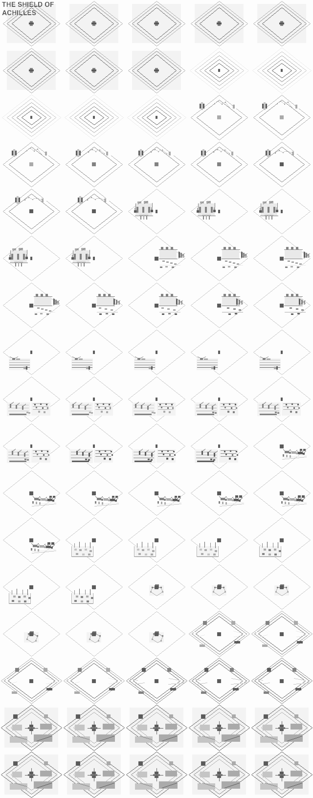
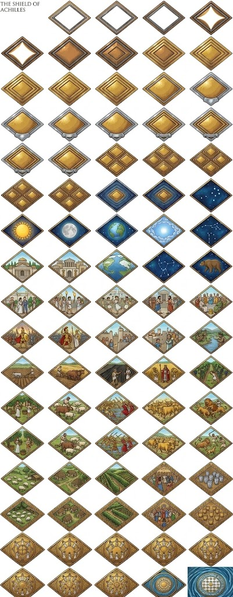
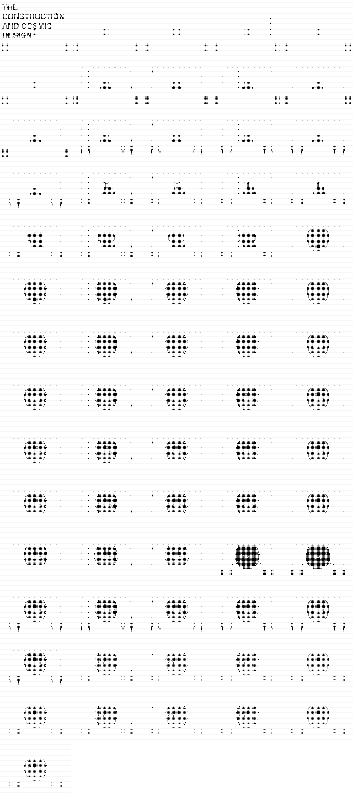
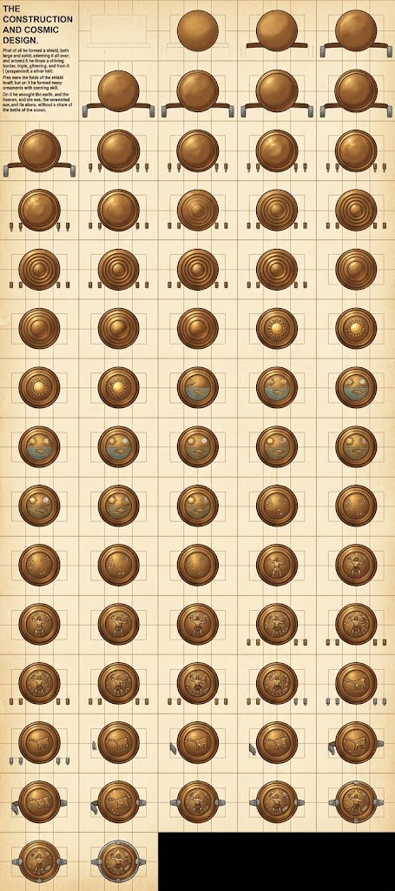
.png)
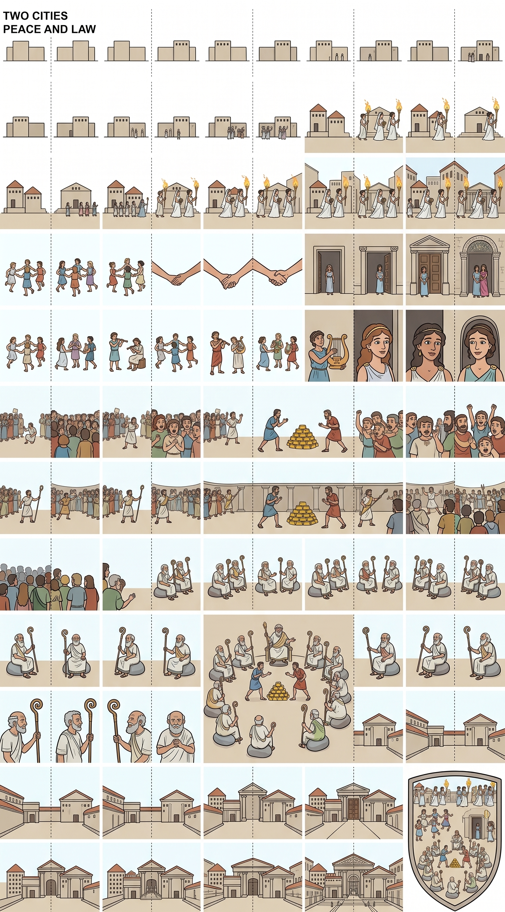
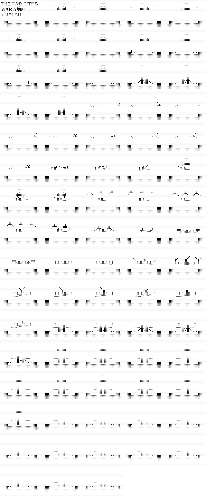
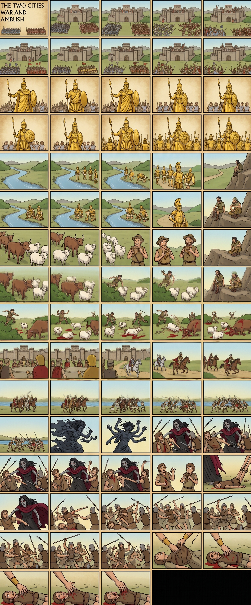
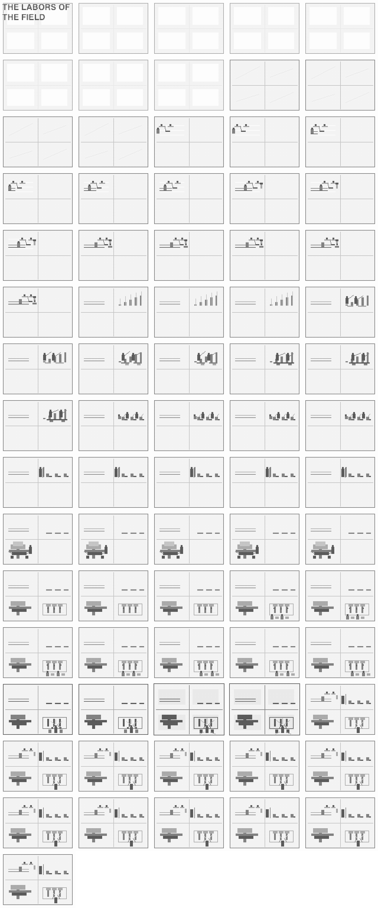
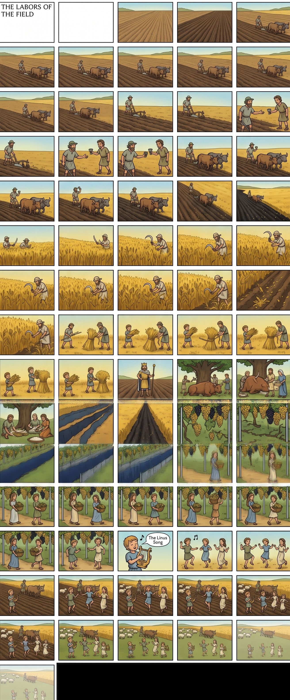
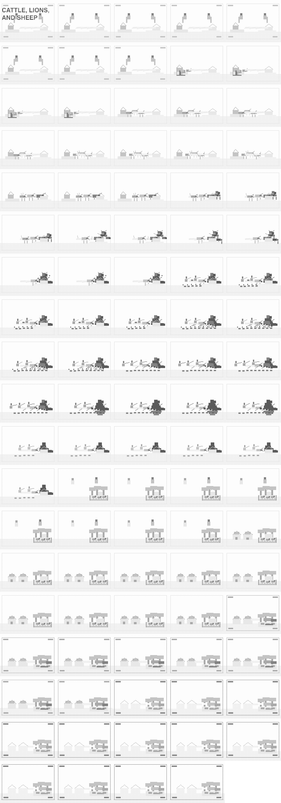
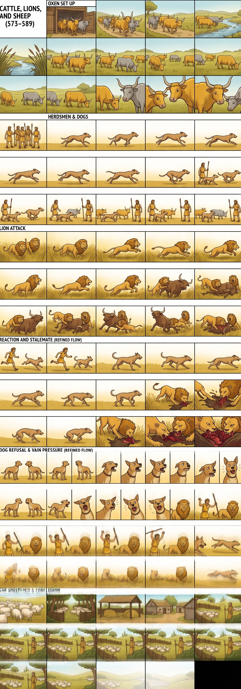
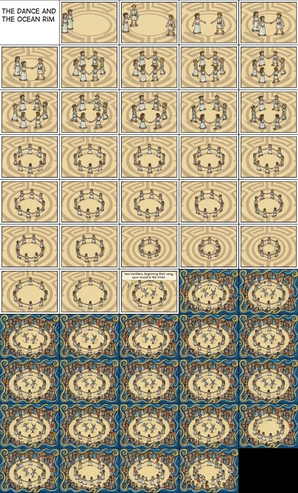